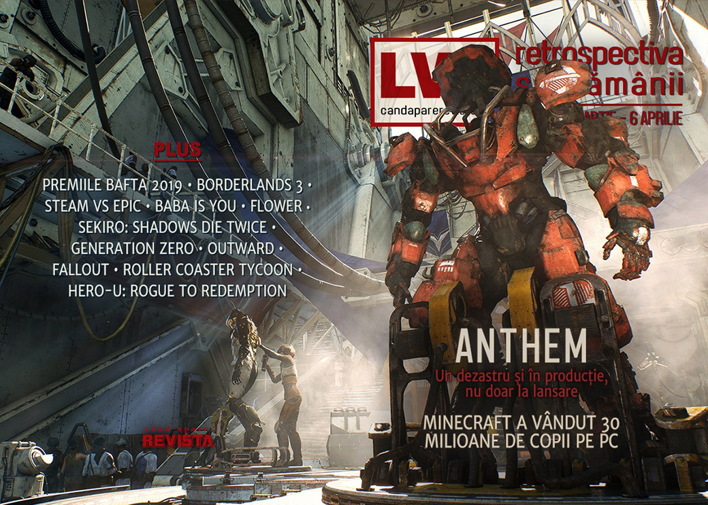

Retrospectiva săptămânii 31 martie - 6 aprilie 2019
Valve și cinci mari publisheri intră în vizorul Comisiei Europene, Kotaku dezvăluie procesul turbulent care i-a dat naștere lui Anthem, Borderlands 3 își pune fanii în cap cu o exclusivitate Epic, iar Minecraft atinge 30 milioane de unități vândute pe PC. Și aveți de citit niște retrospective lungi și interesante despre Fallout, RollerCoaster Tycoon, Indiana Jones and the Fate of Atlantis, Star Trek și altele. Plus nelipsitele eseuri despre Sekiro și despre cât de greu e.
Linkuri rapide:
- Știri
- Articole (critică, dev, design)
- Made în România
- Anunţuri şi lansări de jocuri
- Prăvălii de jocuri

Ştiri
- Minecraft atins impresionanta cifră de 30 milioane de unități vândute. (PCGamesInsider.biz, Gamasutra, Gamereactor)
- S-au decernat premiile BAFTA 2019 și, surpriză!, God of War a câștigat premiul de Best Game. (Shacknews, Variety, GamesIndustry.biz)
- Comisia Europeană anchetează cinci publisheri de jocuri, plus Valve, pentru practica neconcurențială de a limita zonele de activare ale unor jocuri cumpărate din regiuni diferite ale UE. (The Verge, GamesIndustry.biz, Gamasutra, PC Gamer, Wccf tech)
Sony își lasă în sfârșit clienții să-și ceară banii înapoi pentru jocurile pre-comandate pe PlayStation Store, cu condiția să nu le fi descărcat înainte. (The Verge, VentureBeat, GamesIndustry.biz, Variety)
Kotaku publică un cuprinzător reportaj despre perioada de dezvoltare foarte… turbulentă a Anthem, plin de detalii revelatoare despre mersul industriei AAA de jocuri. (Kotaku) (cu sumar pe (Ars Technica, PC Gamer, Polygon, Gamasutra))
- BioWare recunoaște unele probleme, dar crede că articolul e nedrept (GamesIndustry.biz) și anunță intern unele măsuri, dar care nu abordează toate aspectele ridicate de reportaj. (Kotaku)
Articole (critică, dev, design)
- AI Ethics, Computer With Souls, Self-Playing Games (Variety)
- What Is a Video Game? (Variety)
- There’s No Such Thing as a Hard Game (Or an Easy One) (Variety)
- An Easy Mode Has Never Ruined A Game (Kotaku)
- Game Creation Magic Is More Science Than Smoke and Mirrors (Variety)
- Why I love noclip mode (PC Gamer)
- Photo Modes Shift How We Play Games (Medium)
Actualitate
- Alone at the End of the World (Unwinnable)
- Pre-order refunds could force publishers to shift priorities (GamesIndustry.biz)
1 Aprilie
- April Fools’ Day 2019 round-up (PC Gamer)
- The Best (And Worst) April Fools' Day Jokes For 2019 (Kotaku)
- April Fools 2019: Here are this year’s best gaming gags (PCGamesN)
PAX East 2019
- 15 Games That Grabbed My Attention At PAX East (Kotaku)
- A quick look at some neat indie games I played at PAX East 2019 (Destructoid)
BioWare
Not-a-review
- I finally got to be an invisible petal wizard in Flower (PC Gamer)
- Baba Is You Rules (Unwinnable)
- Generation Zero could be something special without the shooting (RPS)
- Playing Outward with a reckless co-op partner is a good way to test your relationship (PC Gamer)
- Let’s Place: A Tale of Endings (Haywire Magazine)
Sekiro
- (Spoilers) Sekiro, Samsara and From Software’s cycles of death (Eurogamer)
- (Spoilers) FromSoftware's History of Cyclical Violence Forces Sekiro: Shadows Die Twice's "Good" Ending to be Viewed Through Weary Eyes (USgamer)
- "The Master Swordsman," by Reid McCarter (Bullet Points Monthly)
- From Software Games And Easy Mode Don't Mix (Games Informer)
- Difficulty Isn’t Personality: From Software Games Can Be Better than This? (I Need Diverse Games)
- We've Always Made Our Own Easy Modes. 'Sekiro' Is No Exception (Waypoint)
- A Different Take on Sekiro Shadows Die Twice (Gamasutra)
- Easy Mode Isn’t An Easy Fix For Accessibility (Timber Owls)
- George R.R. Martin and FromSoftware just might be the perfect partnership (VideoGamer)
- The “Git Gud” Mentality Is Why People Don’t Take Games Seriously (Paste)
Industrie
- Making Video Games Is Not a Dream Job (The New York Times)
- State of play: 3 things we learned at 2019’s Game Developers Conference (The Guardian)
- Obsidian’s Creative Team Talks ‘The Outer Worlds,’ ‘Fallout,’ More (Variety)
- A different lens on Epic Games, Stadia and Arcade (Gamasutra)
- Unity is betting big on ray tracing—here’s how they brought it to their engine (PC Gamer)
- Is it all over for pre-owned video games? (GamesIndustry.biz)
- Making piracy and pre-owned games problems of the past (GamesIndustry.biz)
- Valve walks through the dev-focused features headed to Steam in 2019 (Gamasutra)
- The state of multiplayer gaming and how it’s going to change (VentureBeat)
Istorie, retrospectivă
- Manhunt Hates You And Wants You To Suffer (Kotaku)
- Rediscovering the brilliance of Indiana Jones and the Fate of Atlantis (PC Gamer)
- The complete history of Fallout (PC Gamer)
- Time Is a Flat Ferris Wheel: The Enduring Legacy of ‘RollerCoaster Tycoon’ (The Ringer)
- Interplay Takes on Trek (The Digital Antiquarian)
- The Game Archaeologist: The Chronicles of Spellborn (Massively OP)
- History of Real-Time Strategy: The Peak (1999 - 2003) (VGChartz)
Dev, making of, mecanici
- ‘The Walking Dead’: How Clementine’s Story Found Its End Amid the Ruins of Telltale (Variety)
- Devil May Cry 5: The post-mortem interview (Polygon)
- What Mario Learned from Mickey Mouse - Part 1: Introduction & Colour (Aaron Sutton)
- How devs deal with making enemies that feel ‘okay’ to kill (Gamasutra)
- Hero-U: Rogue to Redemption Postmortem (Gamasutra)
- Video: Sean Murray reflects on No Man’s Sky and grit in game dev (Gamasutra)
- Video: How Media Molecule took Dreams from jam idea to playable game engine (Gamasutra)
- Game Developers Conference Talks Like God Of War, Spider-Man, And Devil May Cry 5 Now Available Online (Games Informer)
Design, world-building, artă
- Aces High (Kotaku)
- Jesus Christ, look at the Borderlands 3 box art (Eurogamer)
- Game Box Art Critique April: Mortal Kombat 11, Days Gone, World War Z (VideoGamer)
Made în România
- Un interviu cu White Pond Games despre jocul lor Urban Strife. (Turn Based Lovers)
- Unbound: Worlds Apart are trailer nou și o mențiune pe RPS. (RPS)
Anunţuri şi lansări de jocuri
- John and Brenda Romero working with Paradox on new strategy IP (Eurogamer]
- DONTNOD Entertainment is currently working on two unannounced games(DSOGaming)
Anunţate
- Darkborn, fostul Project Wight (Games Informer)
- Shelter 3 (RPS)
- Dreadlands (PC Gamer)
- Lair Of The Clockwork God, o nouă aventură cu Ben și Dan (PC Gamer)
- Bear With Me: The Lost Robots (GameSpace)
- Pax Nova, un nou 4X planetar (Destructoid)
Acum cu dată de lansare
- Pathway: 11 aprilie (Polygon)
- Epitasis: 1 mai (Hardcore Gamer)
- A Plague Tale: Innocence: 14 mai (GameSpace)
- Draugen: luna mai (GameSpace)
- Borderlands 3: 13 septembrie (Ars Technica)
Lansate
- 31 martie: Annwn: The Otherworld (Steam)
- 1 aprilie: Totally Accurate Battle Simulator (early access) (Steam)
- 2 aprilie: The 7th Guest: 25th Anniversary Edition (Steam, gog.com)
- 2 aprilie: Serious Sam: Tormental (early access) (Steam)
- 3 aprilie: Bow to Blood: Last Captain Standing (Steam)
- 3 aprilie: Photographs (Steam)
- 4 aprilie: Death Mark (Steam)
- 4 aprilie: Islanders (Steam)
- 4 aprilie: MarZ: Tactical Base Defense (early access) (Steam)
- 5 aprilie: Supraland (early access) (Steam)
- 5 aprilie: notmycar (early access) (Steam)
- 5 aprilie: Feather (Steam)
Prăvălii de jocuri
- Why Valve actually gets less than 30 percent of Steam game sales (Ars Technica)
- Store Wars update: Microsoft and 2K pick sides in the battle between Epic and Steam (PC Gamer)
- A Deep Dive Into Steam’s Discovery Queue (Gamasutra)
- The fury over the Epic Games Store, explained (Polygon)
Știri
- Humble Monthly reaches over 40,000 subscribers (GamesIndustry.biz)
- Microsoft reportedly plans Xbox Game Pass Ultimate subscription (Eurogamer)
- Borderlands 3 va fi un titlu exclusiv Epic Store timp de 6 luni de la lansare. (Gamasutra)
- Răspunul fanilor nu s-a lăsat așteptat - vechile jocuri Borderlands au fost review bombed pe Steam.( PCGamesN )
- Dar noul sistem de protecție introdus de Steam a șters noile review-uri din rating-ul jocurilor. (Eurogamer )
- Iar Randy Pitchford reacționează la fel de imatur, dând vina pe Valve și afirmând că poate Gearbox își va reconsidera poziția pe platforma Steam. Randy Pitchford responds to Borderlands Steam review bombing campaign (PCGamesN)
Jocuri gratis și free weekends
- Undertale artist releases free game Escaped Chasm (Destructoid)
- Call of Duty’s Blackout battle royale mode is free to play through April 30 (Polygon)
- Download The Witness free on Epic Games Store until April 18 (Shacknews)
- Borderlands: The Handsome Collection is free to play on Steam until April 7th (DSOGaming )
Reduceri și promoții
- Humble Bandai Namco Bundle 3 Now Live - Tekken 7, God Eater 2 And More (TechRaptor)
- Get 20 books about the development of Spelunky, Baldur’s Gate II, and more for just $15 (PC Gamer)
- Up to 75% off all Total War this weekend at Humble Bundle (Eurogamer)
- You can get Assassin’s Creed: Origins for $12 right now (PC Gamer)
- Weekend Console Download Deals for Apr. 5: Free Borderlands Xbox weekend (Shacknews)
- Weekend PC Download Deals for Apr. 5: Call of Duty franchise sale (Shacknews)
Retrospectiva săptămânii este rubrica duminicală în care trecem în revistă evenimentele săptămânii de pe frontul de gaming: știri şi articole (scrise de alții, bineînțeles, că e mai ușor aşa), industrie, lansări, oferte de jocuri, toate numai de savurat la cafeaua de duminică dimineața.
De asemenea, rubrica e deschisă oricui vrea și poate contribui. Dacă ai citit vreun articol sau vreo știre interesantă și crezi că merită incluse în retrospectiva săptămânii, te așteptăm pe forum pe unul dintre topicurile dedicate: Știri, Articole, Gaming România].